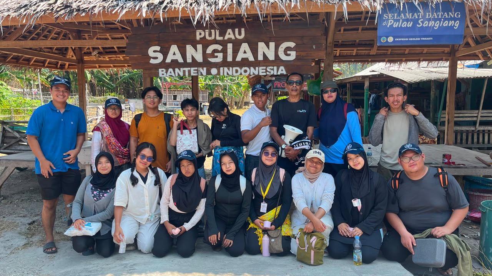
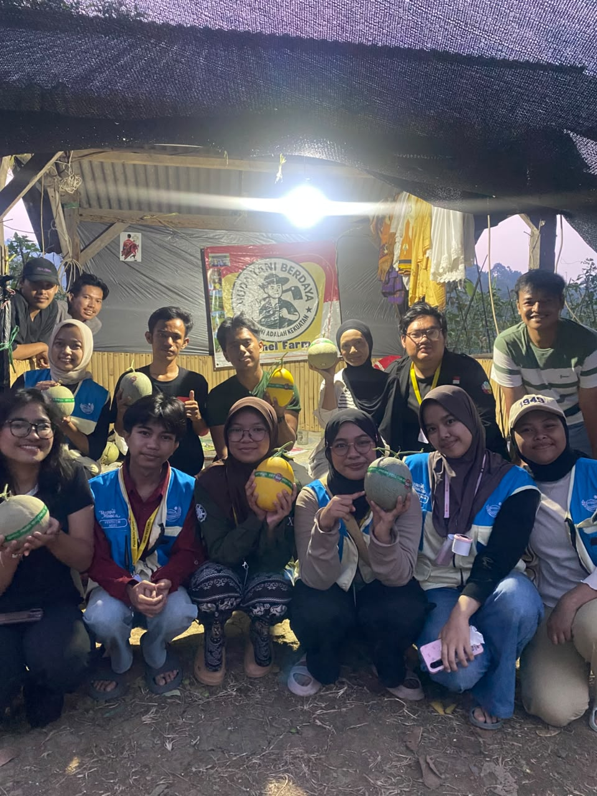
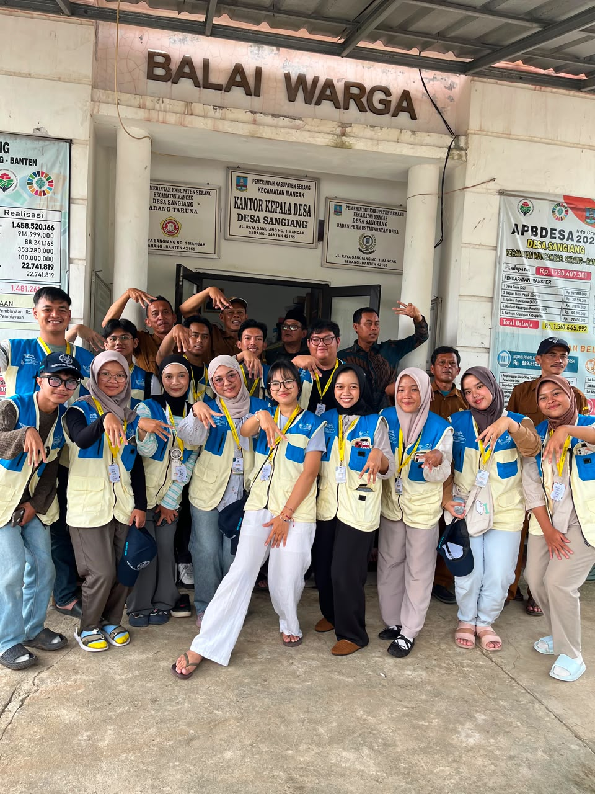
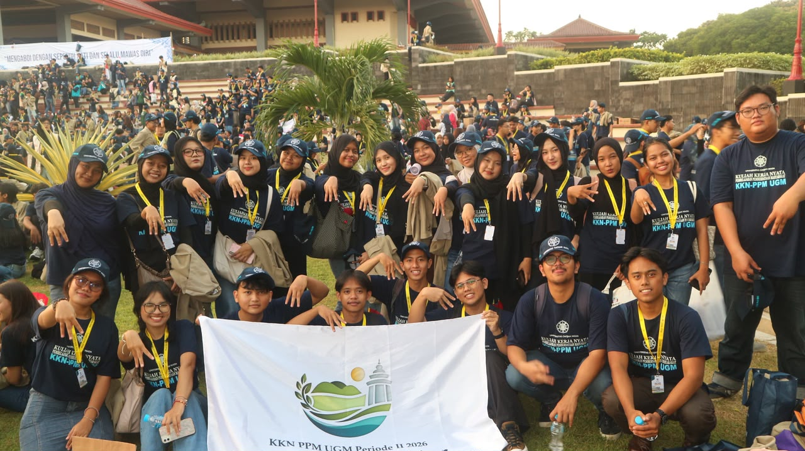
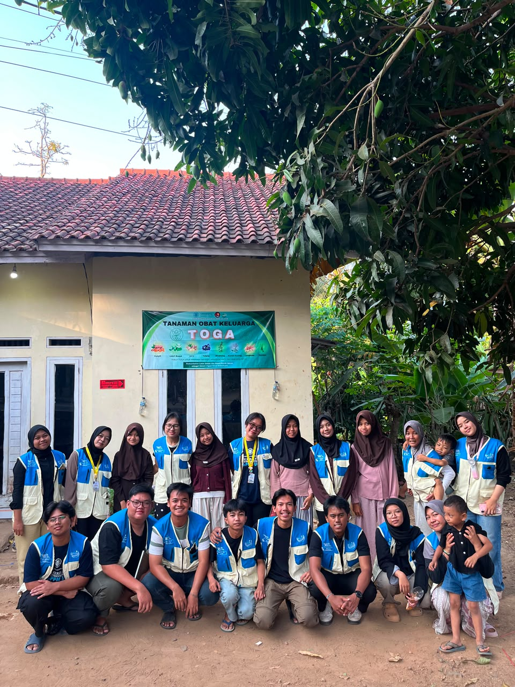
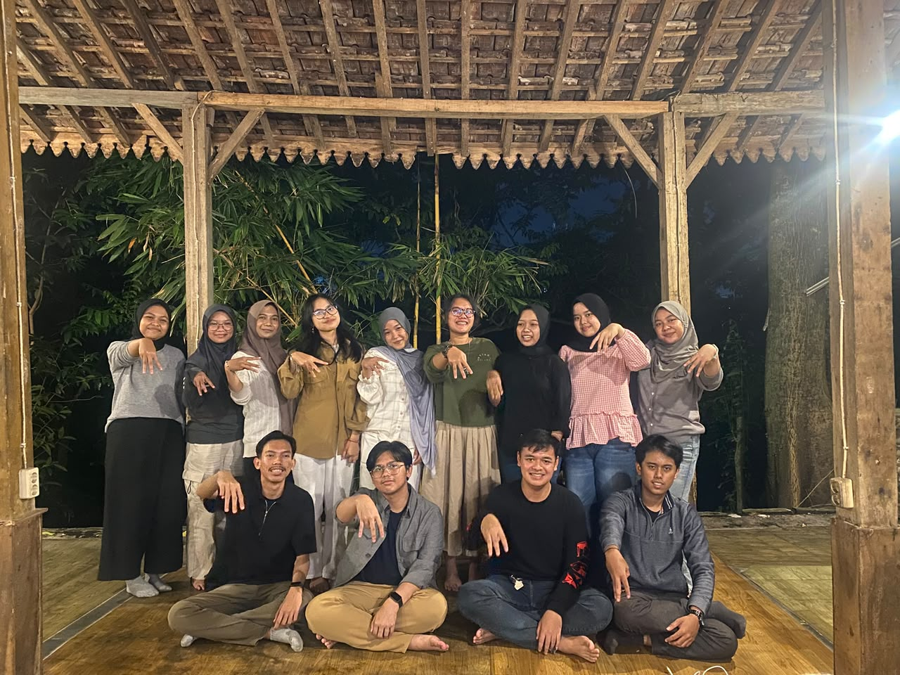

Hi! Ini sedikit terima kasih dariku, untuk sebuah cerita besar yang kita buat bersama.
Udah ada yang rindu berat Sangiang ga?
Day 1 tiba di Sangiang rasanya udah mau pulang aja. Sekarang ga kerasa kita udah beneran pulang. 50 Hari bareng kalian super super menyenangkan. Terima kasih sudah mau hidup bersama dengan damai. Terima kasih sudah bekerja sama untuk mewujudkan seribu proker itu. Terima kasih sudah kompak di setiap kegiatan (memasak dan deep clean contohnya) Terima kasih sudah saling menjaga. Terima kasih untuk tawa dan kebersamaan yang kalian semua berikan selama masa KKN ini. Selama menjalankan peranku, aku mau minta maaf. Untuk semua salah dan marahku. Untuk semua salah langkah dan ketidakmengertianku. Untuk semua ketidakpekaan dan ucapanku. Maaf kalau diantara kalian ada yang pernah terluka karna bercandaan atau ketidaksengajaanku. Semoga yang diingat kenangan baiknya, jangan yang jelek yakkkkkk pwease!
Banyakin foto barengnya lagi yuk di JOGJIS

Siapa yang mau ke pulau lagi!

Mau melon aa Oniii

Day One Mengenal Pak ali dan Seperangkat Balai Desa

Penerjunan nih ^^

Atributnya masih pada lengkap ga?

Yuk rapat lagi.
Jangan diskip, dibercandain, baca punya orang apalagi.
Mau segimana baguspun tempat KKNnya, kalau bukan bareng kalian keknya gabakalan seberkesan ini.
Ayo main terusss.
Jangan cepet ilang (kek bapak bubur ayam)
Kalo ketemu aku di jalan tolong sapa yah.
Awas aja kalo cuek cuek.
(Ntar dilaporin ke kang sobur)
Sekali lagi terima kasih banyak all,
Aku bersyukur pengalaman sekali seumur hidup ini dibersamai orang orang baik seperti kalian!